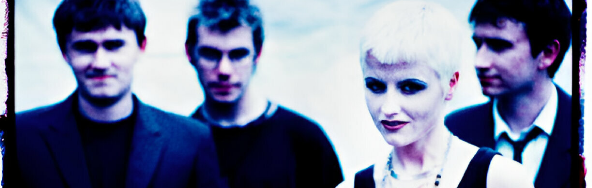

História e Evolução
The Cranberries foi formada em 1989, na cidade de Limerick, Irlanda. Originalmente chamada The Cranberry Saw Us, a banda ganhou notoriedade após a entrada da vocalista Dolores O'Riordan, que trouxe uma nova sonoridade e letras marcantes. O primeiro álbum, 'Everybody Else Is Doing It, So Why Can't We?', lançado em 1993, apresentou hits como 'Linger' e 'Dreams'. A banda alcançou o auge com o single 'Zombie', que se tornou um hino de protesto contra a violência na Irlanda do Norte. Com influências do rock alternativo, pop e indie, The Cranberries conquistou fãs em todo o mundo e se tornou um ícone dos anos 90.
Integrantes e Funções
A banda irlandesa de rock alternativo contava com Dolores O'Riordan (vocal e teclado), Noel Hogan (guitarra), Mike Hogan (baixo) e Fergal Lawler (bateria). A voz marcante e emocional de Dolores, aliada às letras que abordavam temas como amor, dor e questões sociais, tornou o grupo mundialmente reconhecido. Com sucessos como "Linger", "Zombie" e "Dreams", o quarteto conquistou fama global nos anos 1990. Noel criava riffs melódicos, Mike mantinha a base com seu baixo e Fergal dava o ritmo com sua bateria, formando uma sonoridade única. O falecimento de Dolores O'Riordan, em 2018, levou ao encerramento das atividades da banda, que lançou o álbum "In the End" em 2019 como uma despedida à vocalista. O impacto do grupo continua a influenciar o cenário do rock alternativo.